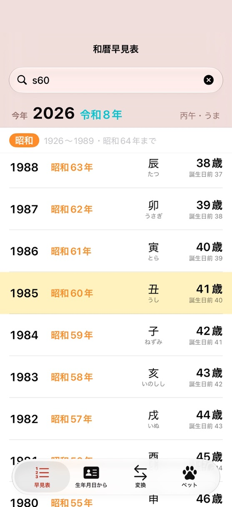
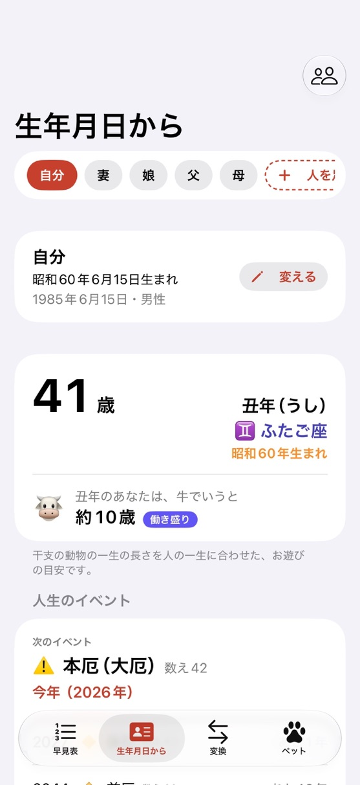
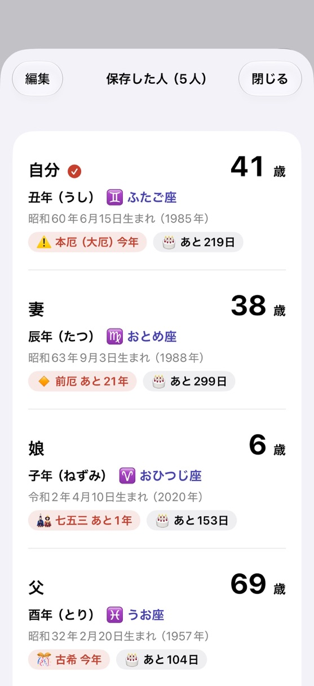

FEATURES
できること
早見表
西暦・和暦・満年齢・干支を1つの表で。改元の年は2つの元号を並べて表示。
生年月日から
満年齢・数え年・学校の入学と卒業の年・厄年・長寿のお祝いを。
西暦⇔和暦の変換
日付で変換すると、改元の日（平成1989年1月8日、令和2019年5月1日）で切り替わります。
ペットの年齢
犬・猫・うさぎ・ハムスター・カメなど、人間の年齢に直すと何歳かを目安で。
SCREENS
画面



PRICE
値段
無料
¥0
- すべての計算・早見表
- 変換・ペットの年齢
- 自分とペット1匹の保存
プラス
¥400（買い切り）
- 広告が消える
- 何人・何匹でも保存
2026年12月13日までにこのアプリを入れた方は、買わなくてもずっと全部無料で使えます（広告も出ません）。
FAQ
よくある質問
改元の年はどう表示されますか？
1989年は「昭和64年／平成元年」、2019年は「平成31年／令和元年」のように2つ表示します。日付で変換すると、改元の日（平成は1989年1月8日、令和は2019年5月1日）で切り替わります。
早見表の年齢の下の「誕生日前」は何ですか？
大きい数字は今年の誕生日を迎えた後の満年齢、「誕生日前」はまだ誕生日が来ていない時の満年齢です。年が変わると自動で切り替わります。
学年の計算で、4月1日生まれはどうなりますか？
法律の決まりにより、4月1日生まれは早生まれ（前の学年）として計算します。4月2日〜翌年4月1日生まれが同じ学年です。
厄年が神社やお寺の表と違います。
本アプリは数え年による一般的な厄年（男性25・42・61歳、女性19・33・37・61歳と、その前後の年）を表示しています。地域や寺社によって違うことがあります。
長寿のお祝いの年が1年ずれています。
還暦は満60歳の年、ほかは数え年の年で表示しています。満年齢で祝う場合は1年後になります。
保存した人やペットの生年月日を直したい／順番を変えたい／消したい。
直す時は、名前の横の「変える」を押し、直してから「保存」を押してください（「やめる」なら変わりません）。順番の入れ替えと削除は、右上のボタンで開く一覧の「編集」からできます。
和暦で生年月日を選べますか？
「変える」の画面で「西暦｜和暦」を切り替えると、昭和・平成・令和などの元号で選べます。
ペットの年齢はどう計算していますか？
よく使われる換算表による目安です。小・中型犬と猫は1歳で15歳・2歳で24歳・そのあと1年に4歳、大型犬は1歳で12歳・2歳で19歳・そのあと1年に7歳、うさぎは1歳で20歳・2歳で28歳・そのあと1年に6歳、ハムスターは1歳で40歳・2歳で65歳・そのあと1年に25歳、フェレットは1歳で20歳・2歳で28歳・そのあと1年に8歳、インコ（セキセイインコ）は1歳で18歳・2歳で25歳・そのあと1年に7歳として計算しています。ヘビには決まった換算表が無いので、コーンスネーク・ボールパイソンの寿命（およそ20年）から、1歳で10歳・2歳で18歳・3歳で24歳・そのあと1年に3歳とした目安です。カメも同じく決まった換算表が無いので、ミドリガメ（アカミミガメ）・クサガメの寿命（およそ40年）から、1歳で5歳・2歳で9歳・5歳で20歳・そのあと1年に2歳、ハリネズミはヨツユビハリネズミの寿命（およそ5〜6年）から、1歳で20歳・2歳で35歳・そのあと1年に13歳とした目安です。体の大きさ・種類・暮らし方で違います。
SUPPORT
サポート
不具合・ご要望・ご質問は、メールでお知らせください。
お使いのiPhoneの機種・iOSのバージョン・アプリのバージョン（App Storeのアプリのページの「バージョン履歴」）を書いていただけると、早く調べられます。